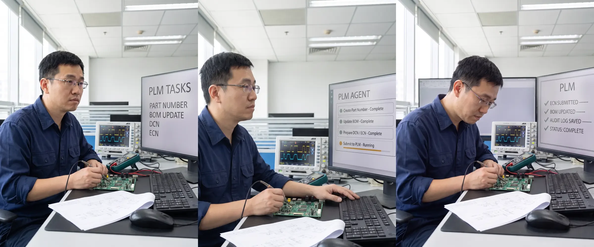

高價值的 RD 時間，不該消耗在料號、BOM 和 ECNHigh-Value R&D Time Should Not Be Spent on Part Numbers, BOMs, and ECNs
保留既有 PLM，讓受控的 Agent 處理重複系統操作，把工程師的注意力留給設計與判斷。Keep PLM as the source of record while a controlled Agent handles repeated transactions.
閱讀全文 Read article